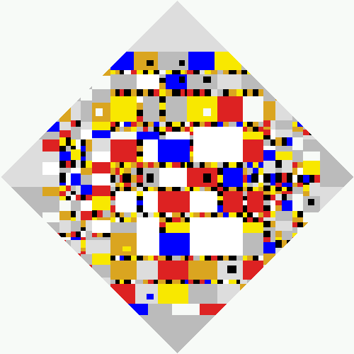

Projects

|
Encoder-DecoderAn autoencoder that learns by comparing real images to generated images in the latent space instead of the image space. |
Kaggle: Painter By NumbersI developed a Kaggle competition to predict if two paintings are by the same artist |
|

|
Kaggle: Bot DetectionIdentify bots in an online auction. |
Kaggle: Seizure DetectionIdentifying epileptic seizures using convnets pretrained on ImageNet photos. |
|

|
CircadelicCreate a colourful circle packing from a photo. |
|  |
MondifyAn algorithm which fakes new versions of Piet Mondrian's painting, "Victory Boogie Woogie". |